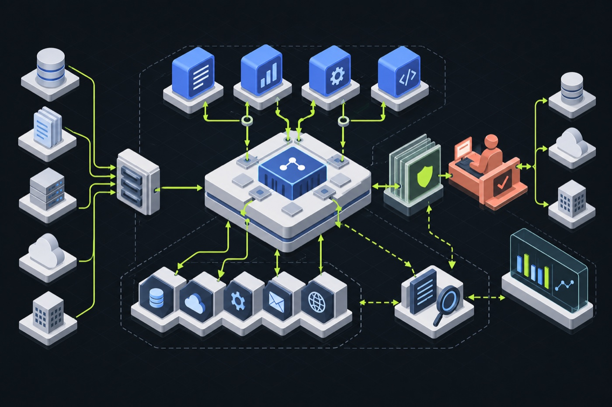
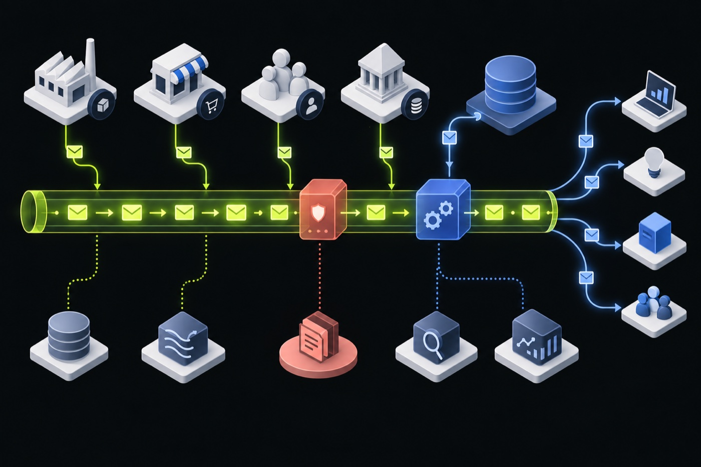
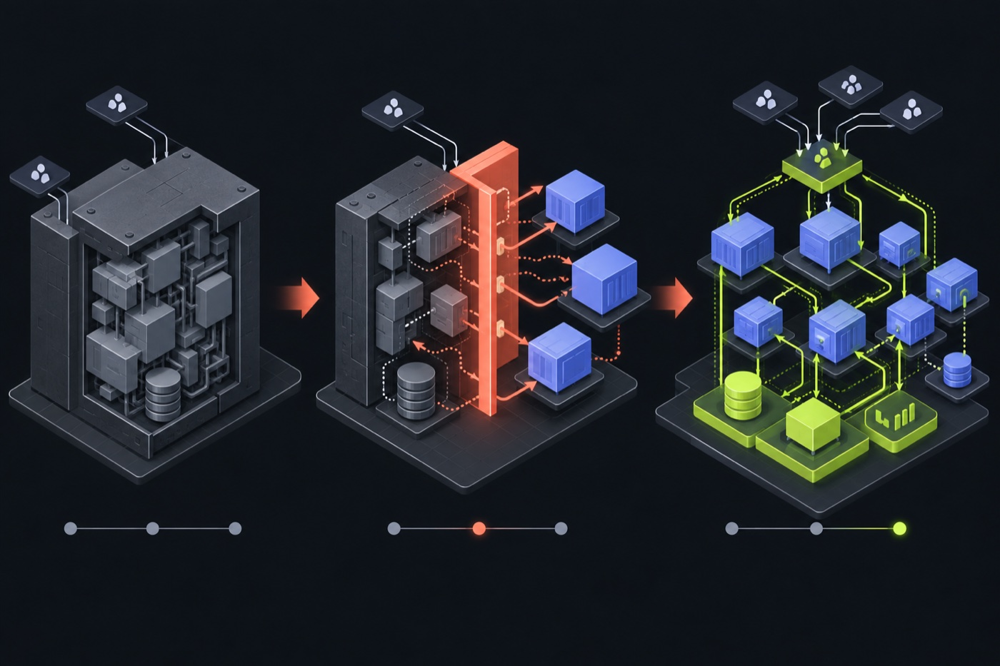

AI systems that can be evaluated
Define evidence boundaries, schemas, quality gates, approval points, and failure behaviour before an AI workflow reaches users.
Technology leadership · Distributed systems · Applied AI
I lead architecture and engineering decisions for regulated, high-volume platforms—from mainframe integration and cloud modernization to AI systems with evidence, evaluation, and human review built in.
13+ years across banking, insurance, and telecom.
01 / About
I’m Somesh Jha, Director of Technology at Zafin. I lead senior architects, advise banking clients, and collaborate across product, engineering, and compliance to guide technology decisions that are practical, scalable, and built for production.
Over 13+ years at Zafin, Empire Life, and IBM, I have led complex technology initiatives from discovery through delivery. My experience includes modernizing monolithic applications, integrating mainframe systems with Kafka, defining cloud transformation roadmaps, and developing computer-vision and AI platforms.
My approach combines strategic perspective with technical depth and a clear understanding of operational realities. I focus on simplifying complex problems, aligning stakeholders, evaluating trade-offs, and enabling teams to deliver secure, resilient, and sustainable technology solutions.
02 / Services
Hands-on advisory for organizations making consequential platform, modernization, and AI decisions.
Define evidence boundaries, schemas, quality gates, approval points, and failure behaviour before an AI workflow reaches users.
Turn business constraints into target-state designs, decision records, delivery increments, and named technical ownership.
Find viable seams in legacy systems, sequence migrations, and keep customer and operational flows working throughout the transition.
Test assumptions across data, integration, security, operations, and compliance; record the decision and the risks that remain.
Give executives and clients an independent view of platform choices, delivery exposure, team capability, and where investment will matter.
03 / Selected work
Public work and generalized client engagements. The details below are specific; client-sensitive information is not.

A local-first application that turns incomplete requirements into HLDs, C4 diagrams, ADRs, risks, and backlog items while keeping every AI-assisted step reviewable.

Designed and delivered the first release of an event-driven integration platform, then led architecture and delivery for the second release across client teams and vendors.

Assessed the legacy estate, designed a cloud-native target state, and facilitated the engineering and executive decisions needed to approve a multi-year roadmap.
Also: named inventor on US Patent 11,270,105 for extracting and analyzing information from engineering drawings.
04 / Writing
Topics I am developing from systems I have built, reviewed, and helped teams operate.
Creating alignment and preserving decision context as systems and organizations evolve.
Why durable execution, explicit state, and operational traceability led me to LangGraph.
Extracting buried business rules through incremental, evidence-led migration.
05 / Contact
Share the system, decision, or delivery risk you are working through. I can help frame the trade-offs, test the architecture, or turn an approved direction into executable work.
View GitHub profile